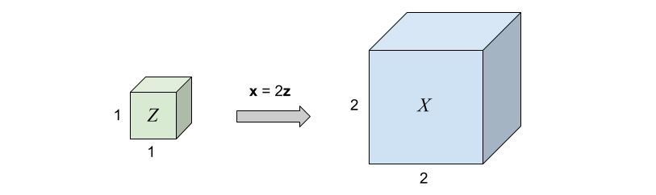
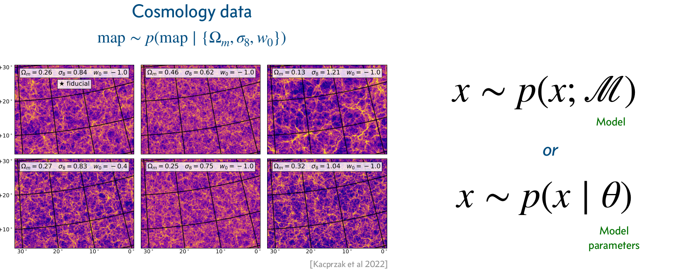

Simulation-based Inference
Uncertainty Quantification
2024-02-22
Credits
Slides are adapted from lectures developed by Gilles Louppe at University of Liege, Belgium under the BSD 3-Clause License
- lectures 10, 11, and 12 of INFO8010 - Deep Learning
- and of lecture materials of SSI 2023
Today
How to model uncertainty in deep learning?
- Uncertainty
- Aleatoric uncertainty
- Epistemic uncertainty
“Every time a scientific paper presents a bit of data, it’s accompanied by an error bar — a quiet but insistent reminder that no knowledge is complete or perfect. It’s a calibration of how much we trust what we think we know.”
Carl Sagan
Uncertainty
Uncertainty1 refers to epistemic situations involving imperfect or unknown information. It applies to predictions of future events, to physical measurements that are already made, or to the unknown.
Uncertainty arises in partially observable or stochastic environments, as well as due to ignorance, indolence, or both.
Why is uncertainty important?
Accounting for uncertainty leads to optimal decisions. Not accounting for uncertainty leads to suboptimal, wrong, or even catastrophic decisions.
Aleatoric uncertainty
Aleatoric uncertainty captures noise inherent in the observations. For example, sensor noise or motion noise result in uncertainty.
This uncertainty cannot be reduced with more data. However, aleatoric uncertainty could be reduced with better measurements.
Aleatoric uncertainty can further be categorized into:
Homoscedastic uncertainty, which relates to the uncertainty that a particular task might cause. It stays constant for different inputs.
Heteroscedastic uncertainty, which depends on the inputs to the model, with some inputs potentially having more noisy outputs than others.
Neural density estimation
Consider training data \((\mathbf{x}, y) \sim p(\mathbf{x}, y)\), with
\(\mathbf{x} \in \mathbb{R}^p\),
\(y \in \mathbb{R}\).
We do not wish to learn a function \(\hat{y} = f(\mathbf{x})\), which would only produce point estimates.
Instead we want to learn the full conditional density \[p(y|\mathbf{x}).\]
NN with Gaussian output layer
We can model aleatoric uncertainty in the output by modeling the conditional distribution as a Gaussian distribution, \[p(y|\mathbf{x}) = \mathcal{N}(y; \mu(\mathbf{x}), \sigma^2(\mathbf{x})),\] where \(\mu(\mathbf{x})\) and \(\sigma^2(\mathbf{x})\) are parametric functions to be learned, such as neural networks.
Note
The Gaussian distribution is a modeling choice. Other parametric distributions can be used.
We have,
\[\begin{aligned} &\arg \max_{\theta,\sigma^2} p(\mathbf{d}|\theta,\sigma^2) \\\\ &= \arg \max_{\theta,\sigma^2} \prod_{\mathbf{x}_i, y_i \in \mathbf{d}} p(y_i|\mathbf{x}_i, \theta,\sigma^2) \\\\ &= \arg \max_{\theta,\sigma^2} \prod_{\mathbf{x}_i, y_i \in \mathbf{d}} \frac{1}{\sqrt{2\pi} \sigma} \exp\left(-\frac{(y_i-\mu(\mathbf{x}_i))^2}{2\sigma^2}\right) \\\\ &= \arg \min_{\theta,\sigma^2} \sum_{\mathbf{x}_i, y_i \in \mathbf{d}} \frac{(y_i-\mu(\mathbf{x}_i))^2}{2\sigma^2} + \log(\sigma) + C \end{aligned}\]
What if \(\sigma^2\) was fixed?
Case 2: heteroscedastic aleatoric uncertainty
Same as for the homoscedastic case, except that that \(\sigma^2\) is now a function of \(\mathbf{x}_i\): \[\begin{aligned} &\arg \max_{\theta} p(\mathbf{d}|\theta) \\\\ &= \arg \max_{\theta} \prod_{\mathbf{x}_i, y_i \in \mathbf{d}} p(y_i|\mathbf{x}_i, \theta) \\\\ &= \arg \max_{\theta} \prod_{\mathbf{x}_i, y_i \in \mathbf{d}} \frac{1}{\sqrt{2\pi} \sigma(\mathbf{x}_i)} \exp\left(-\frac{(y_i-\mu(\mathbf{x}_i))^2}{2\sigma^2(\mathbf{x}_i)}\right) \\\\ &= \arg \min_{\theta} \sum_{\mathbf{x}_i, y_i \in \mathbf{d}} \frac{(y_i-\mu(\mathbf{x}_i))^2}{2\sigma^2(\mathbf{x}_i)} + \log(\sigma(\mathbf{x}_i)) + C \end{aligned}\]
Gaussian mixture model
Modelling \(p(y|\mathbf{x})\) as a unimodal (Gaussian) distribution can be inadequate since the conditional distribution may be multimodal.
A Gaussian mixture model (GMM) defines instead \(p(y|\mathbf{x})\) as a mixture of \(K\) Gaussian components, \[p(y|\mathbf{x}) = \sum_{k=1}^K \pi_k \mathcal{N}(y;\mu_k, \sigma_k^2),\] where \(0 \leq \pi_k \leq 1\) for all \(k\) and \(\sum_{k=1}^K \pi_k = 1\).
Gaussian mixture
Mixture Network
A mixture density network (MDN) is a neural network implementation of the Gaussian mixture model.

Example
Let us consider training data generated randomly as \[y_i = \mathbf{x}_i + 0.3\sin(4\pi \mathbf{x}_i) + \epsilon_i\] with \(\epsilon_i \sim \mathcal{N}\).
Mixture Density Networks
The data can be fit with a 2-layer network producing point estimates for \(y\) (demo).
Multi modality issue
If we flip \(\mathbf{x}_i\) and \(y_i\), the network faces issues since for each input, there are multiple outputs that can work. It produces an average of the correct values (demo).
Mixture Density Network
A mixture density network models the data correctly, as it predicts for each input a distribution for the output, rather than a point estimate (demo).
Normalizing flows
Assume \(p(\mathbf{z})\) is a uniformly distributed unit cube in \(\mathbb{R}^3\) and \(\mathbf{x} = f(\mathbf{z}) = 2\mathbf{z}\).
Since the total probability mass must be conserved, \[p(\mathbf{x}=f(\mathbf{z})) = p(\mathbf{z})\frac{V_\mathbf{z}}{V_\mathbf{x}}=p(\mathbf{z}) \frac{1}{8},\quad\text{where}\frac{1}{8} = \left| \det \left( \begin{matrix} 2 & 0 & 0 \\\\ 0 & 2 & 0 \\\\ 0 & 0 & 2 \end{matrix} \right)\right|^{-1}\] represents the inverse determinant of the linear transformation \(f\).
What if \(f\) is non-linear?
Image credits: Simon J.D. Prince, Understanding Deep Learning, 2023.
Change of variables theorem
If \(f\) is non-linear,
the Jacobian \(J_f(\mathbf{z})\) of \(\mathbf{x} = f(\mathbf{z})\) represents the infinitesimal linear transformation in the neighborhood of \(\mathbf{z}\);
if the function is a bijective map, then the mass must be conserved locally.
Therefore, the local change of density yields \[p(\mathbf{x}=f(\mathbf{z})) = p(\mathbf{z})\left| \det J_f(\mathbf{z}) \right|^{-1}.\]
Similarly, for \(g = f^{-1}\), we have \[p(\mathbf{x})=p(\mathbf{z}=g(\mathbf{x}))\left| \det J_g(\mathbf{x}) \right|.\]
What about the inverse \(f^{-1}\)?
Image credits: Simon J.D. Prince, Understanding Deep Learning, 2023.
Normalizing flows
A normalizing flow is a change of variable \(f\) that transforms a base distribution \(p(\mathbf{z})\) into \(p(\mathbf{x})\) by a series of invertible transformations.

Image credits: Lilian Weng, 2018
Formally,
\(f\) is a composition \(f=f_K \circ ... \circ f_1\), where each \(f_k\) is an invertible neural transformation;
\(g_k = f^{-1}_k\);
\(\mathbf{z}_k = f_k(\mathbf{z}_{k-1})\), with \(\mathbf{z}_0 = \mathbf{z}\) and \(\mathbf{z}_K = \mathbf{x}\);
\(p(\mathbf{z}_k) = p(\mathbf{z}_{k-1} = g_k(\mathbf{z}_k)) \left| \det J_{g_k}(\mathbf{z}_k) \right|\).
Image credits: Simon J.D. Prince, Understanding Deep Learning, 2023.
Example: coupling layers
Assume \(\mathbf{z} = (\mathbf{z}_a, \mathbf{z}_b)\) and \(\mathbf{x} = (\mathbf{x}_a, \mathbf{x}_b)\). Then,
Forward mapping \(\mathbf{x} = f(\mathbf{z})\): \[\mathbf{x}_a = \mathbf{z}_a, \quad \mathbf{x}_b = \mathbf{z}_b \odot \exp(s(\mathbf{z}_a)) + t(\mathbf{z}_a),\]
Inverse mapping \(\mathbf{z} = g(\mathbf{x})\): \[\mathbf{z}_a = \mathbf{x}_a, \quad \mathbf{z}_b = (\mathbf{x}_b - t(\mathbf{x}_a)) \odot \exp(-s(\mathbf{x}_a)),\]
where \(s\) and \(t\) are arbitrary neural networks.
For \(\mathbf{x} = (\mathbf{x}_a, \mathbf{x}_b)\), the log-likelihood is \[\begin{aligned}\log p(\mathbf{x}) &= \log p(\mathbf{z} = g(\mathbf{x})) \left| \det J_g(\mathbf{x}) \right|\end{aligned}\] where the Jacobian \(J_g(\mathbf{x}) = \frac{\partial \mathbf{z}}{\partial \mathbf{x}}\) is a lower triangular matrix \[\left( \begin{matrix} \mathbf{I} & 0 \\\\ \frac{\partial \mathbf{z}_b}{\partial \mathbf{x}_a} & \text{diag}(\exp(-s(\mathbf{x}_a))) \end{matrix} \right),\] such that \(\left| \det J_g(\mathbf{x}) \right| = \prod_i \exp(-s(\mathbf{x}_a))_i = \exp(-\sum_i s(\mathbf{x}_a)_i)\).
Therefore, the log-likelihood is \[\log p(\mathbf{x}) = \log p(\mathbf{z} = g(\mathbf{x})) -\sum_i s(\mathbf{x}_a)_i.\]
Image credits: Wehenkel and Louppe, 2019.
Epistemic uncertainty
Epistemic uncertainty accounts for uncertainty in the model or in its parameters. It captures our ignorance about which model can best explain the collected data.
It can be explained away given enough data1.
Bayesian neural networks
To capture epistemic uncertainty in a neural network, we model our ignorance with a prior distribution \(p(\mathbf{\omega})\) over its weights.
Then we invoke Bayes for making predictions.

The prior predictive distribution at \(\mathbf{x}\) is given by integrating over all possible weight configurations, \[p(y|\mathbf{x}) = \int p(y|\mathbf{x}, \mathbf{\omega}) p(\mathbf{\omega}) d\mathbf{\omega}.\]
Given training data \(\mathbf{d}=\\{(\mathbf{x}_1, y_1), ..., (\mathbf{x}_N, y_N)\\}\) a Bayesian update results in the posterior \[p(\mathbf{\omega}|\mathbf{d}) = \frac{p(\mathbf{d}|\mathbf{\omega})p(\mathbf{\omega})}{p(\mathbf{d})}\] where the likelihood \(p(\mathbf{d}|\omega) = \prod_i p(y_i | \mathbf{x}_i, \omega).\)
The posterior predictive distribution is then given by \[p(y|\mathbf{x},\mathbf{d}) = \int p(y|\mathbf{x}, \mathbf{\omega}) p(\mathbf{\omega}|\mathbf{d}) d\mathbf{\omega}.\]
Bayesian neural networks are easy to formulate, but notoriously difficult to perform inference in.
\(p(\mathbf{d})\) is intractable to evaluate, which results in the posterior \(p(\mathbf{\omega}|\mathbf{d})\) not being tractable either.
Therefore, we must rely on approximations.
Variational inference
Variational inference can be used for building an approximation \(q(\mathbf{\omega};\nu)\) of the posterior \(p(\mathbf{\omega}|\mathbf{d})\).
We can show that minimizing \[\text{KL}(q(\mathbf{\omega};\nu) || p(\mathbf{\omega}|\mathbf{d}))\] with respect to the variational parameters \(\nu\), is identical to maximizing the evidence lower bound objective (ELBO)
\[\text{ELBO}(\nu) = \overbrace{\mathbb{E}_{q(\mathbf{\omega};\nu)} \left[\log p(\mathbf{d}| \mathbf{\omega})\right]}^{\text{reconstruction error}} - \overbrace{\text{KL}(q(\mathbf{\omega};\nu) || p(\mathbf{\omega}))}^{\text{regularization}}.\]
Note
The most common measure of distance between probability distributions \(p(x)\) and \(q(x)\) is the Kullback-Leibler or KL divergence and is defined as:
\[ D_{KL}[p(x)\Vert q(x)]=\int p(x)\log \begin{bmatrix}\frac{p(x)}{q(x)}\end{bmatrix}\mathrm{d}x. \]
The integral in the ELBO is not tractable for almost all \(q\), but it can be maximized with stochastic gradient ascent:
- Sample \(\hat{\omega} \sim q(\mathbf{\omega};\nu)\).
- Do one step of maximization with respect to \(\nu\) on \[\hat{L}(\nu) = \log p(\mathbf{d}|\hat{\omega}) - \log\frac{q(\hat{\omega};\nu)}{p(\hat{\omega})} \]
In the context of Bayesian neural networks, this procedure is also known as Bayes by backprop (Blundell et al, 2015).
Training VAE

Simulation-based inference

Scientific simulators


unconditioned
\[\theta, z, x \sim p(\theta, z, x)\]

conditioned
\[\theta, z \sim p(\theta, z | x)\]

Credit: Brehmer
Conditional simulators
A conditional simulator prescribes a way to sample from the likelihood \(p(\mathbf{x}|\vartheta)\), where \(\vartheta\) is a set of conditioning variables or parameters.
Credits: Siddharth Mishra-Sharma, 2023.


\[p(x|\theta) = \underbrace{\iiint}_{\text{yikes!}} p(z_p|\theta) p(z_s|z_p) p(z_d|z_s) p(x|z_d) dz_p dz_s dz_d\]
That’s bad!
Bayesian inference
Start with
- a simulator that can generate \(N\) samples \(x_i \sim p(x_i|\theta_i)\),
- a prior model \(p(\theta)\),
- observed data \(x_\text{obs} \sim p(x_\text{obs} | \theta_\text{true})\).
Then, estimate the posterior
\[p(\theta|x_\text{obs}) = \frac{p(x_\text{obs} | \theta)p(\theta)}{p(x_\text{obs})}.\]

Algorithms

Credits: Cranmer, Brehmer and Louppe, 2020.
Approximate Bayesian Computation (ABC)

Credits: Johann Brehmer.
Issues:
How to choose \(x'\)? \(\epsilon\)? \(||\cdot||\)?
No tractable posterior.
Need to run new simulations for new data or new prior.
Credits: Cranmer, Brehmer and Louppe, 2020.

Credits: Cranmer, Brehmer and Louppe, 2020.
Produce samples \[\mathbf{x} \sim p(\mathbf{x} | \vartheta)\]
Evaluate densities \[p(\mathbf{x}|\vartheta)\] \[p(\vartheta | \mathbf{x}) = \frac{p(\mathbf{x} | \vartheta) p(\vartheta)}{p(\mathbf{x})}\]
Encode complex priors \[p(\mathbf{x})\]